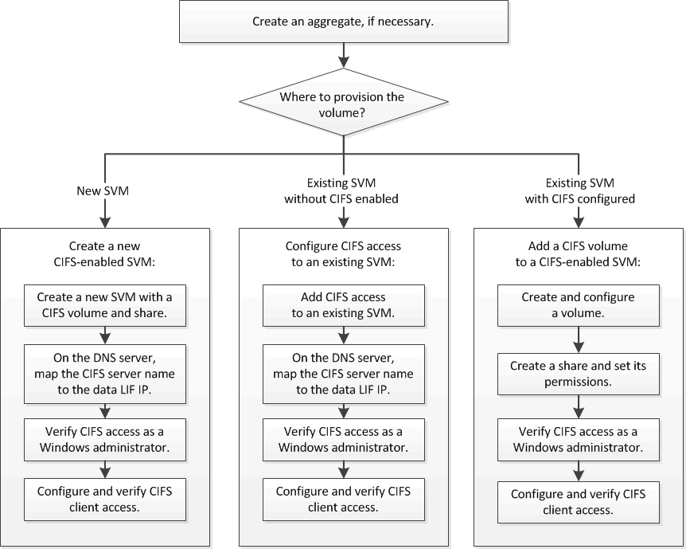

NAS-Storage bereitstellen
NAS-Storage bereitstellen
Die deutsche Sprachversion wurde als Serviceleistung für Sie durch maschinelle Übersetzung erstellt. Bei eventuellen Unstimmigkeiten hat die englische Sprachversion Vorrang.
SMB/CIFS-Konfigurations-Workflow
Beitragende
 Änderungen vorschlagen
Änderungen vorschlagen
-
 PDF dieser Dokumentationssite
PDF dieser Dokumentationssite
-
NAS-Storage bereitstellen
-
Provisionierung von SAN-Storage
-
Datensicherung und Disaster Recovery
-
Sammlung separater PDF-Dokumente
Creating your file...
This may take a few minutes. Thanks for your patience.
Your file is ready
Bei der Konfiguration von SMB/CIFS muss optional ein Aggregat erstellt werden und anschließend ein Workflow ausgewählt werden, der speziell auf Ihre Ziele zugeschnitten ist: Erstellung einer neuen CIFS-fähigen SVM, Konfiguration des CIFS-Zugriffs auf eine vorhandene SVM oder Hinzufügen eines CIFS-Volumes zu einer vorhandenen SVM, die bereits vollständig für CIFS-Zugriff konfiguriert ist.
